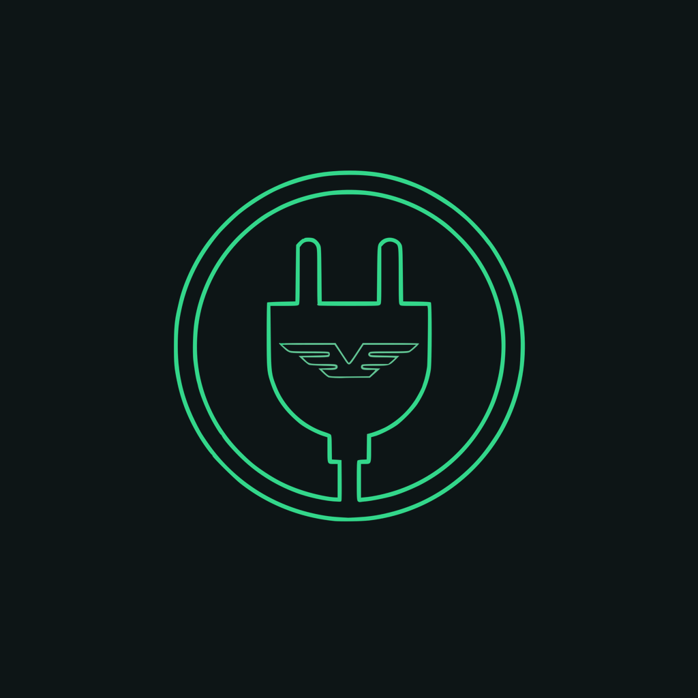

Volta Şarj
Elektrikli aracınızın bataryasını gerçek zamanlı izleyin.
Volta Şarj, aracınızın batarya yönetim sistemine (BMS) Bluetooth ile bağlanır ve bataryanın o anki durumunu telefonunuza taşır. Şarj seviyesinden tek tek hücre gerilimlerine kadar, BMS'in bildiği her şeyi görürsünüz.
Neler yapıyor
Canlı telemetri
Paket gerilimi, akım, şarj durumu ve kapasite; sürüş sırasında anlık güç göstergesiyle.
Öğrenen menzil tahmini
Sabit bir katsayı yerine, sizin gerçek sürüş verinizden öğrenilen tüketime ve batarya sıcaklığına göre hesaplanır.
Hücre bazında detay
Her hücrenin gerilimi, aralarındaki fark ve kritik eşik uyarıları.
Şarj takibi
Duvar şarjını rejeneratif frenlemeden ayırt eder, dolum süresini ve tahmini bitiş saatini gösterir.
Sıcaklık ve arızalar
Hücre ve MOS sıcaklıkları, BMS'in bildirdiği arıza durumları önem sırasına göre.
Bağlantı kopsa da
Araç yakınınızda değilken son bilinen durumu, ne zaman görüldüğü bilgisiyle gösterir.
İndir
Android
Android 7.0 ve üzeri
APK indirUygulama Google Play'de olmadığı için telefonunuz kurulumdan önce izin isteyecek. İndirdiğiniz dosyaya dokunun ve çıkan uyarıda bu kaynaktan kuruluma izin verin. Güncellerken aynı dosyayı tekrar indirmeniz yeterli; üzerine kurulur.
iPhone
iOS 15.0 ve üzeri
TestFlight incelemesindeiOS sürümü TestFlight üzerinden dağıtılacak. Onay alındığında davet bağlantısı buraya eklenecek; katılmak için telefonunuzda Apple'ın ücretsiz TestFlight uygulaması gerekir.
Sürüm notları
- Bluetooth kapalıyken uygulamanın kapanması giderildi; artık nedenini açıklayan bir ekran ve tek dokunuşla Bluetooth'u açma seçeneği var
- Araca bağlandıktan sonra veri gelmeye başladığı anda oluşan kapanma giderildi
- Bağlantı, batarya modülünün desteklediği yazma tipine göre kendini ayarlıyor
- Ayarlar sekmesine bağlantı günlüğü eklendi: sorun yaşarsanız kopyalayıp gönderebilirsiniz. Uygulama beklenmedik şekilde kapanırsa, tekrar açtığınızda aynı ekranda hata raporu görünür
- Gereksiz izinler kaldırıldı; uygulama artık yalnızca Bluetooth, konum ve internet izni istiyor
Gizlilik
Volta Şarj hiçbir veri toplamaz ve internete hiçbir şey göndermez. Sunucusu yoktur, hesap açmanız gerekmez, analitik ve reklam içermez. Batarya verisi ve sürüş mesafesi yalnızca telefonunuzda kalır.
Ayrıntılar: Gizlilik Politikası
Platformlar
- Android — 7.0 (API 24) ve üzeri
- iOS — 15.0 ve üzeri